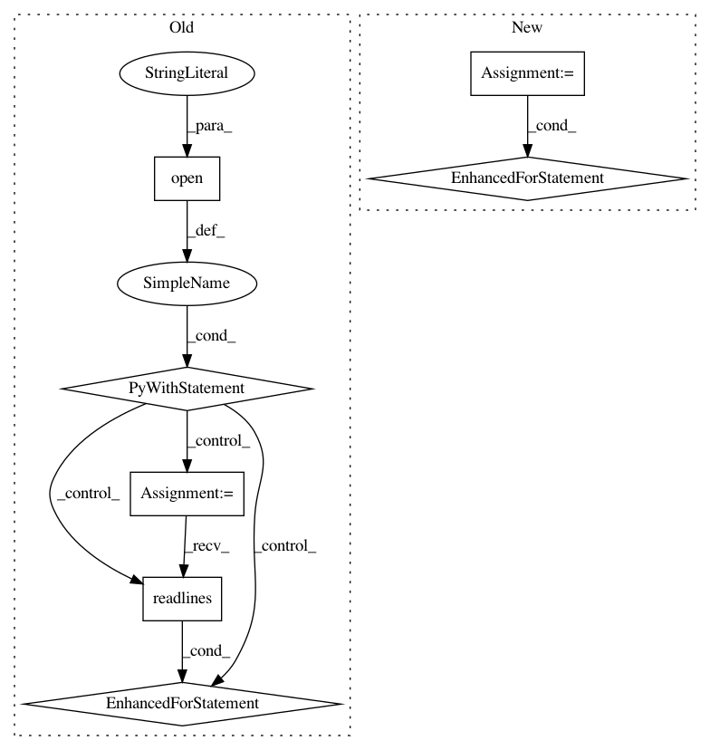

1c5d3fae1644dec2c31f45044138b26d5b9f25f2,relationExtraction/data/preprocessing.py,get_json_file,get_rel_json,#get_json_file#,18
Before Change
def get_rel_json(self):
rel2id = {0:"NA"}
with open(self.relation_file_name,"r",encoding = "utf8") as fr:
for line in fr.readlines():
try:
relation = line.split(",")[0]
relation = relation[2:len(relation)-1]
rel2id[len(rel2id)] = relation
except:
raise ValueError
with open(self.relation_json_file_name,"w") as fw:
json.dump(rel2id,fw)
def get_dataset_json(self):
After Change
def get_rel_json(self):
rel2id = {"NA":0}
relation_list = ["instance of", "has part", "subclass of", "parent taxon", "material used",
"natural product of taxon"]
//rel2id = {}
for x in relation_list:
rel2id[x] = len(rel2id)
with open(self.relation_json_file_name,"w") as fw:
json.dump(rel2id,fw,ensure_ascii=False,indent = 4, separators=(",", ": "))
def get_dataset_json(self):
In pattern: SUPERPATTERN
Frequency: 3
Non-data size: 7
Instances
Project Name: qq547276542/Agriculture_KnowledgeGraph
Commit Name: 1c5d3fae1644dec2c31f45044138b26d5b9f25f2
Time: 2018-11-21
Author: kjmd2d@sina.cn
File Name: relationExtraction/data/preprocessing.py
Class Name: get_json_file
Method Name: get_rel_json
Project Name: pantsbuild/pants
Commit Name: 79ba58636288f95be1a156f02623d46b0eb242ea
Time: 2019-09-07
Author: ericarellano@me.com
File Name: tests/python/pants_test/reporting/test_reporting_integration.py
Class Name: TestReportingIntegrationTest
Method Name: test_invalidation_report_output
Project Name: pantsbuild/pants
Commit Name: 04629674f5f9e65bd35565b329f8c892a16865a4
Time: 2012-07-07
Author: benjy@foursquare.com
File Name: src/python/twitter/pants/tasks/jvm_compiler_dependencies.py
Class Name: Dependencies
Method Name: findclasses